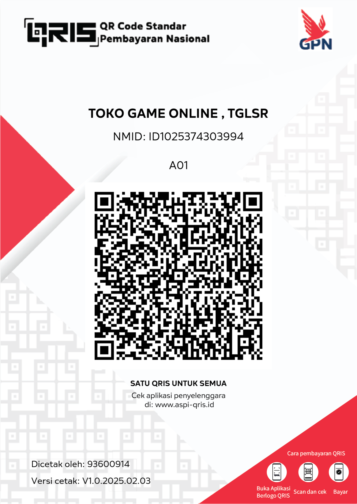

<!DOCTYPE html>
<html lang="id">
<head>
<meta charset="UTF-8"><meta name="viewport" content="width=device-width,initial-scale=1">
<meta name="theme-color" content="#0b1020">
<title>Creator Studio — Niche & Video Planner</title>
<style>
:root{--bg:#0b1020;--panel:#111a2e;--panel2:#17233b;--line:#293854;--text:#eef3ff;--muted:#a4b2cc;--brand:#8b5cf6;--brand2:#22d3ee;--good:#34d399;--warn:#fbbf24;--danger:#fb7185}
*{box-sizing:border-box}body{margin:0;background:radial-gradient(ellipse at top left,#1b2450 0,transparent 42%),var(--bg);color:var(--text);font:15px/1.5 Inter,system-ui,-apple-system,Segoe UI,Roboto,sans-serif}button,input,select,textarea{font:inherit}button{cursor:pointer;border:0;border-radius:11px;padding:10px 14px;font-weight:750;background:linear-gradient(120deg,var(--brand),#6366f1);color:white}button.secondary{background:#26344f;border:1px solid #394a69}button.ghost{background:transparent;border:1px solid var(--line)}button.danger{background:#7f1d35}button:disabled{opacity:.5;cursor:not-allowed}input,select,textarea{background:#0b1326;border:1px solid #344461;color:var(--text);padding:11px 12px;border-radius:10px;width:100%;outline:none}input:focus,select:focus,textarea:focus{border-color:var(--brand2)}label{display:block;color:var(--muted);font-size:13px;margin:0 0 6px}.muted{color:var(--muted)}.tiny{font-size:12px}.hidden{display:none!important}.app{display:grid;grid-template-columns:255px 1fr;min-height:100vh}.sidebar{padding:22px 15px;background:#090e1bdb;border-right:1px solid var(--line);position:sticky;top:0;height:100vh;overflow:auto}.logo{display:flex;gap:10px;align-items:center;font-weight:900;font-size:19px;margin:0 7px 25px}.logoMark{display:grid;place-items:center;width:38px;height:38px;border-radius:13px;background:linear-gradient(135deg,var(--brand),var(--brand2));color:#06101e}.nav{display:grid;gap:6px}.nav button{display:flex;align-items:center;gap:10px;text-align:left;background:transparent;color:#b7c4dc;border:1px solid transparent;font-weight:650}.nav button.active,.nav button:hover{background:#1b2740;color:white;border-color:#344765}.side-bottom{margin-top:25px;padding:14px;border:1px solid var(--line);border-radius:15px;background:linear-gradient(145deg,#1a2041,#111a2e)}.main{min-width:0}.topbar{display:flex;justify-content:space-between;align-items:center;padding:18px 27px;border-bottom:1px solid var(--line);background:#0b1020c9;position:sticky;top:0;z-index:5;backdrop-filter:blur(15px)}.topbar h2{margin:0;font-size:17px}.user-chip{display:flex;gap:10px;align-items:center}.avatar{width:34px;height:34px;border-radius:50%;display:grid;place-items:center;background:#293854;font-weight:900}.content{padding:26px;max-width:1450px;margin:auto}.hero{padding:28px;border-radius:22px;border:1px solid #3a3a72;background:linear-gradient(115deg,#25245b,#172e4c 65%,#14313d);display:flex;justify-content:space-between;gap:20px;align-items:center}.hero h1{font-size:clamp(25px,4vw,39px);line-height:1.1;margin:10px 0}.hero p{max-width:650px;color:#d1dcf4}.eyebrow{color:#a5f3fc;text-transform:uppercase;letter-spacing:1.5px;font-size:11px;font-weight:900}.hero-art{font-size:70px;filter:drop-shadow(0 8px 25px #0007)}.grid{display:grid;gap:16px}.stats{grid-template-columns:repeat(4,minmax(0,1fr));margin:18px 0}.stat,.card{background:linear-gradient(160deg,#131e34,#101729);border:1px solid var(--line);border-radius:17px;padding:18px;min-width:0}.stat strong{font-size:27px;display:block}.stat span{color:var(--muted);font-size:13px}.two{grid-template-columns:repeat(2,minmax(0,1fr))}.three{grid-template-columns:repeat(3,minmax(0,1fr))}.section-head{display:flex;align-items:center;justify-content:space-between;gap:12px;margin:26px 0 13px}.section-head h2{font-size:20px;margin:0}.card h3{margin:0 0 8px}.form-grid{display:grid;grid-template-columns:repeat(2,minmax(0,1fr));gap:13px}.field.full{grid-column:1/-1}.actions{display:flex;gap:8px;flex-wrap:wrap;margin-top:15px}.tag{display:inline-flex;align-items:center;padding:4px 8px;border-radius:99px;font-size:11px;font-weight:800;background:#26314d;color:#d7e4ff;border:1px solid #3b4a69}.tag.good{color:#a7f3d0;background:#103b32}.tag.pro{color:#fde68a;background:#49351b}.idea{padding:16px;border:1px solid var(--line);border-radius:14px;background:#101a2d}.idea h3{font-size:17px}.idea p{margin:7px 0;color:#c3cde0}.idea .idea-meta{display:flex;gap:6px;flex-wrap:wrap;margin:10px 0}.idea-actions{display:flex;gap:7px;flex-wrap:wrap;margin-top:12px}.list{display:grid;gap:10px}.notice{padding:12px 14px;border:1px solid #465170;border-radius:12px;background:#171f35;color:#c9d6ee;margin:12px 0}.notice.warn{border-color:#765d2d;background:#302715;color:#fde7a6}.notice.good{border-color:#276652;background:#102d28;color:#a7f3d0}.table-wrap{overflow:auto}table{width:100%;border-collapse:collapse;min-width:570px}th,td{text-align:left;padding:11px;border-bottom:1px solid var(--line);font-size:13px}th{color:#9eafcb}.pill-tabs{display:flex;gap:7px;flex-wrap:wrap;margin-bottom:16px}.pill-tabs button{background:#17233b;border:1px solid var(--line)}.pill-tabs button.active{background:#5540a2;border-color:#8b5cf6}.pricing{position:relative;overflow:hidden}.pricing.featured{border-color:#8b5cf6;box-shadow:0 0 0 1px #8b5cf633}.price{font-size:30px;font-weight:900;margin:8px 0}.feature-list{padding-left:19px;color:#cbd5e1}.feature-list li{margin:8px 0}.auth-wrap{min-height:100vh;display:grid;place-items:center;padding:20px}.auth-card{width:min(470px,100%);padding:28px;border-radius:22px;background:#111a2e;border:1px solid var(--line);box-shadow:0 30px 100px #0008}.auth-card h1{margin:8px 0}.auth-card .form-grid{grid-template-columns:1fr}.footer{padding:20px;text-align:center;color:#7788a5;font-size:12px}.mobile-menu{display:none}.kpi{color:#67e8f9}.empty{padding:28px;text-align:center;color:var(--muted);border:1px dashed #3b4a69;border-radius:14px}.modal-back{position:fixed;inset:0;background:#020617c9;z-index:20;display:grid;place-items:center;padding:18px}.modal{width:min(550px,100%);background:#121d32;border:1px solid #40516f;border-radius:20px;padding:22px;max-height:90vh;overflow:auto}.modal-head{display:flex;justify-content:space-between;align-items:center}.modal-head h2{margin:0}.close{background:transparent;border:1px solid var(--line);padding:5px 10px}.qris{display:block;max-width:230px;width:100%;margin:12px auto;border-radius:10px;background:white;padding:6px}.copyrow{display:flex;gap:8px;align-items:center;margin:8px 0}.copyrow code{flex:1;overflow-wrap:anywhere;background:#0a1223;padding:10px;border-radius:8px;color:#d7e4ff}.toast{position:fixed;bottom:20px;right:20px;background:#172b3c;border:1px solid #2e6670;padding:12px 17px;border-radius:12px;z-index:50;box-shadow:0 10px 40px #0008}.small-link{color:#a5f3fc;cursor:pointer;text-decoration:underline}.admin-badge{color:#fecaca;background:#451a1a}.mobile-bottom{display:none}
@media(max-width:950px){.app{grid-template-columns:1fr}.sidebar{height:auto;position:relative;border-right:0;border-bottom:1px solid var(--line);padding:12px}.logo{margin:0 5px 10px}.nav{display:flex;overflow:auto}.nav button{white-space:nowrap;padding:9px}.side-bottom{display:none}.topbar{padding:13px 17px}.content{padding:17px}.stats{grid-template-columns:repeat(2,minmax(0,1fr))}.three{grid-template-columns:repeat(2,minmax(0,1fr))}.hero-art{font-size:45px}}
@media(max-width:600px){.hero{padding:20px}.hero-art{display:none}.two,.three,.form-grid{grid-template-columns:1fr}.content{padding:13px}.stat,.card{padding:14px}.topbar h2{font-size:15px}.user-chip .username{display:none}.section-head{align-items:flex-start}.stats{gap:10px}.stat strong{font-size:23px}.nav button{font-size:12px}}
</style></head>
<body>
<div id="root"></div><div id="modalRoot"></div><div id="toastRoot"></div>
<script>
/* CREATOR STUDIO DEMO
   Frontend-only demo. Do not use localStorage/hardcoded credentials for production auth or payment verification.
   Connect Supabase/Firebase + server-side payment provider before accepting real subscriptions.
*/
const $=s=>document.querySelector(s);
const DBKEY='creatorStudioDemoV1';
const defaultDB={users:[],requests:[],ideas:[],settings:{proPrices:[19000,49000,99000],brand:'Creator Studio'},credits:{}};
let db=loadDB(),currentUser=null,page='dashboard',ideaResults=[],filters={platform:'YouTube',format:'Video panjang',language:'Indonesia',category:'Semua niche',competition:'Semua',trend:'Semua'},searchText='';
function loadDB(){try{return {...structuredClone(defaultDB),...JSON.parse(localStorage.getItem(DBKEY)||'{}')}}catch(e){return structuredClone(defaultDB)}}
function saveDB(){localStorage.setItem(DBKEY,JSON.stringify(db))}
function esc(s=''){return String(s).replace(/[&<>"']/g,c=>({'&':'&amp;','<':'&lt;','>':'&gt;','"':'&quot;',"'":'&#39;'}[c]))}
function id(){return Math.random().toString(36).slice(2,10)+Date.now().toString(36).slice(-4)}
function toast(s){$('#toastRoot').innerHTML=`<div class="toast">${esc(s)}</div>`;setTimeout(()=>$('#toastRoot').innerHTML='',2600)}
function isAdmin(){return currentUser?.role==='admin'}
function isPro(){return isAdmin()||currentUser?.plan==='pro'}
function credits(){return isAdmin()?999999:(db.credits[currentUser?.username]??(currentUser?.plan==='pro'?100:10))}
function fmt(n){return new Intl.NumberFormat('id-ID',{style:'currency',currency:'IDR',maximumFractionDigits:0}).format(n)}
function persistUser(){if(!currentUser)return;let i=db.users.findIndex(x=>x.username===currentUser.username);if(i>=0)db.users[i]={...db.users[i],...currentUser};saveDB()}
function render(){if(!currentUser){renderAuth();return}renderApp()}
function renderAuth(){ $('#root').innerHTML=`<div class="auth-wrap"><div class="auth-card"><div class="logo"><span class="logoMark">CS</span> CREATOR STUDIO</div><span class="tag">IDE • STRATEGI • KALENDER</span><h1 id="authTitle">Masuk ke studio</h1><p class="muted">Temukan niche, riset ide video panjang, dan susun strategi konten dalam satu dashboard.</p><div id="authError"></div><form id="authForm" class="form-grid"><div class="field"><label>Username</label><input name="username" required autocomplete="username" placeholder="Masukkan username"></div><div class="field"><label>Password</label><input name="password" required type="password" autocomplete="current-password" placeholder="Masukkan password"></div><div id="registerFields" class="field full hidden"><label>Email (opsional untuk demo)</label><input name="email" type="email" placeholder="nama@email.com"></div><button id="authSubmit" class="field full">Masuk</button></form><p class="muted tiny" id="authSwitch">Belum punya akun? <span class="small-link" onclick="toggleAuth()">Daftar akun</span></p><div class="notice warn tiny"><b>Mode demo:</b> akun tersimpan di browser ini saja. Jangan gunakan password penting. Login admin demo: <b>admin</b> / <b>admin1245</b>. Ganti dan pindahkan autentikasi ke backend sebelum website dipublikasikan.</div><div class="footer">Creator Studio • Ide yang bagus dimulai dari riset</div></div></div>`;window.authMode='login';$('#authForm').onsubmit=authSubmit}
function toggleAuth(){window.authMode=window.authMode==='login'?'register':'login';$('#authTitle').textContent=window.authMode==='login'?'Masuk ke studio':'Buat akun baru';$('#authSubmit').textContent=window.authMode==='login'?'Masuk':'Daftar akun';$('#registerFields').classList.toggle('hidden',window.authMode!=='register');$('#authSwitch').innerHTML=window.authMode==='login'?'Belum punya akun? <span class="small-link" onclick="toggleAuth()">Daftar akun</span>':'Sudah punya akun? <span class="small-link" onclick="toggleAuth()">Masuk</span>'}
function authSubmit(e){e.preventDefault();let f=new FormData(e.target),u=String(f.get('username')).trim().toLowerCase(),p=String(f.get('password'));if(window.authMode==='register'){if(u==='admin'){authErr('Username admin tidak dapat didaftarkan.');return}if(u.length<3||p.length<6){authErr('Username minimal 3 karakter dan password minimal 6 karakter.');return}if(db.users.some(x=>x.username===u)){authErr('Username sudah digunakan.');return}db.users.push({username:u,password:p,email:f.get('email')||'',role:'member',plan:'free',joined:new Date().toISOString()});db.credits[u]=10;saveDB();currentUser=db.users.find(x=>x.username===u);toast('Akun demo berhasil dibuat');render()}else{if(u==='admin'&&p==='admin1245'){currentUser={username:'admin',role:'admin',plan:'pro'};render();return}let user=db.users.find(x=>x.username===u&&x.password===p);if(!user){authErr('Username atau password salah.');return}currentUser={...user};render()}}
function authErr(s){$('#authError').innerHTML=`<div class="notice warn">${esc(s)}</div>`}
const nav=[['dashboard','⌂','Dashboard'],['ideas','✦','Generator Ide'],['niche','◎','Penjelajah Niche'],['research','⌕','Riset & Potensi'],['planner','▦','Kalender Konten'],['scripts','✎','Outline Video'],['saved','♡','Ide Tersimpan'],['pro','♛','Pro Member'],['credits','◈','Credit & Riwayat'],['profile','⚙','Profil']];
function renderApp(){let title=(nav.find(n=>n[0]===page)||[])[2]||'Admin Panel';$('#root').innerHTML=`<div class="app"><aside class="sidebar"><div class="logo"><span class="logoMark">CS</span><span>CREATOR <span class="kpi">STUDIO</span></span></div><div class="nav">${nav.map(n=>`<button class="${page===n[0]?'active':''}" onclick="go('${n[0]}')"><span>${n[1]}</span>${n[2]}</button>`).join('')}${isAdmin()?'<button class="'+(page==='admin'?'active':'')+'" onclick="go(\\'admin\\')">♜ Admin Panel</button>':''}</div><div class="side-bottom"><span class="tag ${isPro()?'pro':''}">${isAdmin()?'ADMIN ACCESS':isPro()?'PRO MEMBER':'FREE MEMBER'}</span><h3 style="margin:12px 0 4px">${isAdmin()?'Akses penuh':isPro()?'Studio Pro':'Mulai berkembang'}</h3><p class="muted tiny">${isAdmin()?'Kelola permintaan & pengguna.':isPro()?'Fitur Pro aktif di demo ini.':'Upgrade untuk membuka fitur Pro.'}</p><button class="secondary" style="width:100%" onclick="go('pro')">Lihat paket</button></div></aside><main class="main"><header class="topbar"><h2>${title}</h2><div class="user-chip"><span class="tag ${isPro()?'pro':''}">${isAdmin()?'ADMIN':isPro()?'PRO':'FREE'}</span><div class="avatar">${esc(currentUser.username.slice(0,1).toUpperCase())}</div><span class="username">${esc(currentUser.username)}</span><button class="ghost" onclick="logout()">Keluar</button></div></header><div class="content" id="pageContent">${pageContent()}</div><div class="footer">Creator Studio • Data demo disimpan di browser perangkat ini • Validasi tren membutuhkan riset aktual</div></main></div>`}
function go(p){page=p;renderApp();window.scrollTo(0,0)}
function logout(){currentUser=null;render()}
function needPro(feature){if(isPro())return true;modal(`<h2>Fitur Pro Member</h2><p>Fitur <b>${esc(feature)}</b> tersedia untuk Pro. Pilih paket dan ajukan pembayaran untuk ditinjau admin.</p><div class="actions"><button onclick="closeModal();go('pro')">Lihat paket Pro</button><button class="secondary" onclick="closeModal()">Nanti</button></div>`);return false}
function pageContent(){switch(page){case'dashboard':return dashboard();case'ideas':return generator();case'niche':return nichePage();case'research':return researchPage();case'planner':return plannerPage();case'scripts':return scriptsPage();case'saved':return savedPage();case'pro':return proPage();case'credits':return creditsPage();case'profile':return profilePage();case'admin':return adminPage();default:return dashboard()}}
function dashboard(){let mine=db.ideas.filter(x=>x.owner===currentUser.username);return `<section class="hero"><div><div class="eyebrow">YOUR NEXT BIG IDEA STARTS HERE</div><h1>Bangun channel dengan<br><span class="kpi">ide yang lebih terarah.</span></h1><p>Temukan niche, susun konsep video panjang, rancang judul, hook, outline, dan kalender upload. Potensi viral adalah estimasi—bukan jaminan views.</p><div class="actions"><button onclick="go('ideas')">✦ Generate ide sekarang</button><button class="secondary" onclick="go('niche')">Jelajahi niche</button></div></div><div class="hero-art">🚀</div></section><div class="grid stats"><div class="stat"><span>Credit tersedia</span><strong>${isAdmin()?'∞':credits()}</strong><span>${isPro()?'Kuota Pro demo':'Credit gratis demo'}</span></div><div class="stat"><span>Ide tersimpan</span><strong>${mine.length}</strong><span>Dalam akun ini</span></div><div class="stat"><span>Status member</span><strong style="font-size:20px">${isAdmin()?'Admin':isPro()?'Pro':'Free'}</strong><span>Fitur sesuai paket</span></div><div class="stat"><span>Permintaan pembayaran</span><strong>${db.requests.filter(x=>x.username===currentUser.username).length}</strong><span>Riwayat akun</span></div></div><div class="section-head"><h2>Mulai dari sini</h2><span class="muted tiny">Pilih alat sesuai kebutuhanmu</span></div><div class="grid three">${[['✦','Generator Ide','Buat konsep video panjang berdasarkan niche dan target penonton.','ideas'],['◎','Penjelajah Niche','Bandingkan kebutuhan audiens, format, dan peluang diferensiasi.','niche'],['▦','Kalender Konten','Buat jadwal 30 hari yang realistis dan konsisten.','planner']].map(x=>`<div class="card"><div style="font-size:25px">${x[0]}</div><h3>${x[1]}</h3><p class="muted">${x[2]}</p><button class="secondary" onclick="go('${x[3]}')">Buka fitur →</button></div>`).join('')}</div><div class="section-head"><h2>Tips agar ide lebih berpotensi</h2></div><div class="grid two"><div class="card"><h3>🎯 Janji video spesifik</h3><p class="muted">Tentukan siapa penontonnya, masalah yang dipecahkan, dan hasil yang akan didapat.</p></div><div class="card"><h3>🔎 Validasi sebelum produksi</h3><p class="muted">Cek pencarian YouTube, komentar kompetitor, tren Google, dan video terbaru di niche-mu.</p></div></div>`}
const nicheDB=[
['Edukasi & skill','Tutorial software, belajar bahasa, matematika praktis, skill kerja, penjelasan konsep sulit','Evergreen','Sedang'],['Keuangan pribadi','Budgeting pemula, kebiasaan hemat, edukasi finansial dasar','Evergreen','Tinggi'],['Teknologi & AI','Tutorial AI, review workflow, automasi kreator, perbandingan aplikasi','Tinggi','Tinggi'],['Gaming','Challenge, lore, walkthrough, tips pemula, eksperimen game','Tinggi','Tinggi'],['Dokumenter mini','Kisah tempat, sejarah benda, misteri yang terverifikasi, profil tokoh','Evergreen','Sedang'],['Kuliner','Resep hemat, uji resep, makanan daerah, eksperimen dapur','Evergreen','Tinggi'],['Kesehatan & kebugaran','Rutinitas pemula, kebiasaan sehat, olahraga ringan dengan sumber tepercaya','Evergreen','Tinggi'],['Hewan & alam','Perilaku hewan, edukasi satwa, rescue dengan etis, fakta alam','Evergreen','Sedang'],['Cerita & drama','Cerita orisinal, storytelling, plot twist, kisah inspiratif','Tinggi','Tinggi'],['Produktivitas','Belajar fokus, manajemen waktu, sistem catatan, rutinitas realistis','Evergreen','Sedang'],['Travel & lokal','Panduan kota, biaya perjalanan, budaya, hidden gems yang diverifikasi','Musiman','Sedang'],['DIY & kerajinan','Proyek sederhana, upcycle, dekorasi, eksperimen bahan','Evergreen','Sedang'],['Olahraga','Analisis taktik, latihan dasar, cerita atlet, penjelasan aturan','Musiman','Tinggi'],['Parenting & keluarga','Aktivitas keluarga, ide belajar, rutinitas rumah yang aman','Evergreen','Tinggi'],['Bisnis kreator','Cara bikin konten, workflow editing, analitik, eksperimen thumbnail','Tinggi','Tinggi'],['Fashion & grooming','Outfit budget, perawatan dasar, style guide, review berbasis pengalaman','Musiman','Tinggi'],['Karier & bisnis','CV, wawancara, studi kasus bisnis, skill profesional','Evergreen','Tinggi'],['Sains & eksperimen','Eksperimen aman, fenomena sehari-hari, penjelasan berbasis sumber','Evergreen','Sedang'],['Review & perbandingan','Perbandingan produk/aplikasi, tes penggunaan, kelebihan-kekurangan','Tinggi','Tinggi'],['Kisah sejarah','Peristiwa sejarah, timeline, mitos vs fakta dengan sumber','Evergreen','Sedang']];
function generator(){return `<div class="grid two"><div class="card"><h3>✦ Generator ide video panjang</h3><p class="muted">Sesuaikan audiens, format, dan tujuan untuk mendapat ide yang lebih relevan.</p><div class="form-grid"><div class="field full"><label>Niche / topik utama</label><input id="gNiche" placeholder="Contoh: AI untuk kreator pemula" value="${esc(filters.category==='Semua niche'?'':filters.category)}"></div><div class="field"><label>Platform</label><select id="gPlatform">${['YouTube','Facebook Watch','Podcast','Website'].map(x=>`<option ${filters.platform===x?'selected':''}>${x}</option>`).join('')}</select></div><div class="field"><label>Bahasa konten</label><select id="gLang">${['Indonesia','English','Bilingual'].map(x=>`<option ${filters.language===x?'selected':''}>${x}</option>`).join('')}</select></div><div class="field"><label>Target durasi</label><select id="gDuration"><option>8–12 menit</option><option>12–20 menit</option><option>20–30 menit</option><option>30–60 menit</option></select></div><div class="field"><label>Tujuan utama</label><select id="gGoal"><option>Views & retensi</option><option>Subscriber</option><option>Search / evergreen</option><option>Affiliate / konversi</option><option>Komunitas</option></select></div><div class="field full"><label>Target penonton</label><input id="gAudience" placeholder="Contoh: pemula usia 18–30 yang ingin belajar AI"></div><div class="field full"><label>Gaya video</label><select id="gStyle"><option>Tutorial langkah demi langkah</option><option>Storytelling / dokumenter</option><option>Eksperimen / challenge</option><option>Listicle / ranking</option><option>Review / perbandingan</option><option>Analisis / opini</option><option>Case study</option><option>Podcast / wawancara</option></select></div><div class="field full"><label>Jumlah ide</label><select id="gCount"><option>5</option><option selected>10</option><option>15</option></select></div></div><div class="actions"><button onclick="generateIdeas()">✦ Generate ide</button><button class="secondary" onclick="fillExample()">Isi contoh</button></div><p class="tiny muted">Generator memakai pola editorial lokal di browser, bukan data tren real-time. Validasi ide sebelum produksi.</p></div><div class="card"><h3>🧠 Formula judul & hook</h3><p class="muted">Pilih formula untuk membangun rasa ingin tahu tanpa clickbait menyesatkan.</p><div class="list">${[['Masalah → solusi','“Kenapa [masalah] terjadi? Ini cara mengatasinya”'],['Eksperimen','“Saya mencoba [metode] selama [periode]—ini hasilnya”'],['Panduan pemula','“Panduan [topik] dari nol: langkah demi langkah”'],['Mitos vs fakta','“[Jumlah] mitos tentang [topik] yang perlu diperiksa”'],['Perbandingan','“[A] vs [B]: mana yang cocok untuk [audiens]?”']].map(x=>`<div class="idea"><b>${x[0]}</b><p>${x[1]}</p><button class="ghost" onclick="copyText(${JSON.stringify(x[1])})">Salin formula</button></div>`).join('')}</div></div></div><div class="section-head"><h2>Hasil ide</h2><span class="muted tiny" id="ideaCount">${ideaResults.length} ide</span></div><div id="ideaResults" class="list">${ideaResults.length?ideaResults.map(renderIdea).join(''):'<div class="empty">Isi topik di atas lalu tekan <b>Generate ide</b>. Hasil akan muncul di sini.</div>'}</div>`}
function fillExample(){ $('#gNiche').value='AI untuk kreator pemula';$('#gAudience').value='Kreator pemula dengan modal terbatas';toast('Contoh diisi')}
function generateIdeas(){let niche=$('#gNiche').value.trim()||'konten kreator';if(!isAdmin()){if(credits()<1){toast('Credit habis. Lihat paket Pro atau tambah credit.');go('pro');return}db.credits[currentUser.username]=credits()-1}let platform=$('#gPlatform').value,lang=$('#gLang').value,dur=$('#gDuration').value,goal=$('#gGoal').value,aud=$('#gAudience').value.trim()||'pemula yang ingin belajar '+niche,style=$('#gStyle').value,count=Number($('#gCount').value);let templates=[
['Panduan lengkap {niche} untuk pemula','Susun fondasi dari nol, kesalahan awal yang umum, lalu rencana praktik 7 hari.','Evergreen','Mudah','Search intent kuat jika keyword tervalidasi'],
['7 kesalahan saat mulai {niche} (dan cara memperbaikinya)','Tunjukkan kesalahan, dampaknya, lalu solusi praktis dengan contoh.','Evergreen','Mudah','Struktur listicle mudah diikuti'],
['Saya mencoba {niche} selama 30 hari: hasil dan pelajaran','Dokumentasikan baseline, eksperimen, metrik, kegagalan, dan evaluasi jujur.','Tinggi','Sedang','Cerita personal dapat menjaga rasa ingin tahu'],
['{niche}: mitos vs fakta yang perlu diketahui','Pisahkan klaim populer dari informasi yang punya sumber tepercaya.','Evergreen','Sedang','Bagus untuk edukasi, wajib verifikasi fakta'],
['A sampai Z: membangun sistem {niche} yang konsisten','Buat workflow, alat, waktu, biaya, dan checklist yang dapat ditiru.','Evergreen','Sedang','Nilai praktis dan potensi ditonton ulang'],
['Berapa biaya memulai {niche}? Simulasi budget hemat','Bandingkan opsi gratis, menengah, dan premium dengan asumsi yang transparan.','Evergreen','Sedang','Niat pencarian bisa kuat; update angka'],
['{niche} vs alternatifnya: mana yang cocok untuk pemula?','Bandingkan berdasarkan kebutuhan, biaya, waktu, kelebihan, dan batasan.','Tinggi','Sedang','Membantu keputusan penonton'],
['Tantangan 7 hari belajar {niche} dari nol','Satu target harian, tugas, hasil, dan refleksi di akhir tantangan.','Tinggi','Mudah','Serial berpotensi membangun kebiasaan menonton'],
['Studi kasus: apa yang bisa dipelajari dari {niche}?','Analisis satu contoh nyata dengan sumber, konteks, dan pelajaran yang terukur.','Tinggi','Sulit','Kuat jika riset orisinal dan mendalam'],
['Checklist sebelum kamu mulai {niche}','Buat daftar alat, persiapan, risiko, target, dan tanda kemajuan.','Evergreen','Mudah','Berguna sebagai video referensi'],
['Reaksi berbasis data: tren {niche} yang layak dicermati','Bandingkan contoh terbaru dengan data aktual; jangan klaim tren tanpa bukti.','Tinggi','Sulit','Perlu riset real-time dan sumber jelas'],
['Jawab 10 pertanyaan paling umum tentang {niche}','Kumpulkan pertanyaan dari komentar, forum, pencarian, lalu jawab singkat dan jelas.','Evergreen','Sedang','Pertanyaan nyata bisa mendukung relevansi']
];let shuffled=templates.map((t,i)=>({t,i,score:Math.random()})).sort((a,b)=>a.score-b.score).slice(0,count);ideaResults=shuffled.map(({t},i)=>{let title=t[0].replaceAll('{niche}',niche),outline=t[1].replaceAll('{niche}',niche);let idd=id();return {id:idd,owner:currentUser.username,niche,title,outline,platform,duration:dur,language:lang,audience:aud,goal,style,evergreen:t[2],difficulty:t[3],potential:t[4],hook:`“Kalau kamu ${aud.toLowerCase()}, video ini akan membantumu memahami ${niche} tanpa membuang waktu pada hal yang tidak perlu.”`,created:new Date().toISOString(),score:Math.floor(58+Math.random()*37)}});db.ideas.push(...ideaResults);saveDB();persistUser();renderApp();toast(`${ideaResults.length} ide dibuat. 1 credit digunakan.`)}
function renderIdea(x){return `<article class="idea"><div style="display:flex;justify-content:space-between;gap:10px;align-items:flex-start"><div><span class="tag">${esc(x.platform||'YouTube')}</span> <span class="tag">${esc(x.duration||'8–12 menit')}</span><h3>${esc(x.title)}</h3></div><span class="tag">${x.score||'—'}/100 estimasi</span></div><p>${esc(x.outline)}</p><div class="idea-meta"><span class="tag">${esc(x.evergreen||'Evergreen')}</span><span class="tag">Produksi: ${esc(x.difficulty||'Sedang')}</span><span class="tag">${esc(x.style||'Video panjang')}</span></div><p><b>Hook:</b> ${esc(x.hook||'Mulai dengan pertanyaan yang dekat dengan masalah audiens.')}</p><p class="tiny muted">Potensi merupakan heuristik ide, bukan prediksi performa. Validasi dengan data aktual.</p><div class="idea-actions"><button onclick="saveIdea('${x.id}')">♡ Simpan ide</button><button class="secondary" onclick="outlineIdea('${x.id}')">Buat outline</button><button class="ghost" onclick="copyText(${JSON.stringify(x.title+'\\n'+x.outline+'\\nHook: '+x.hook)})">Salin</button></div></article>`}
function saveIdea(i){let x=db.ideas.find(x=>x.id===i);if(!x)return;if(!x.saved){x.saved=true;saveDB();toast('Ide disimpan')}else toast('Ide sudah tersimpan');}
function savedPage(){let a=db.ideas.filter(x=>x.owner===currentUser.username&&x.saved);return `<div class="section-head"><h2>Ide tersimpan</h2><span class="tag">${a.length} ide</span></div>${a.length?`<div class="list">${a.map(x=>renderIdea(x)).join('')}</div>`:'<div class="empty">Belum ada ide tersimpan. Buka Generator Ide dan simpan ide favoritmu.</div>'}`}
function nichePage(){let cats=[...new Set(nicheDB.map(x=>x[0]))];return `<div class="hero"><div><div class="eyebrow">NICHE EXPLORER</div><h1>Temukan sudut kontenmu.</h1><p>Gunakan daftar niche sebagai titik awal. Keunggulan muncul dari audiens spesifik, pengalaman, dan sudut pandang unik.</p></div><div class="hero-art">🧭</div></div><div class="card" style="margin-top:16px"><div class="form-grid"><div class="field"><label>Cari niche / keyword</label><input id="nicheSearch" oninput="filterNiches()" placeholder="Misalnya AI, gaming, tutorial"></div><div class="field"><label>Model konten</label><select id="nicheType" onchange="filterNiches()"><option>Semua</option><option>Evergreen</option><option>Tinggi</option><option>Musiman</option></select></div></div></div><div id="nicheList" class="grid two" style="margin-top:15px">${nicheCards(nicheDB)}</div>`}
function nicheCards(a){return a.map(x=>`<div class="card niche-item" data-text="${esc(x.join(' ').toLowerCase())}"><div class="idea-meta"><span class="tag">${x[2]}</span><span class="tag">Kompetisi: ${x[3]}</span></div><h3>${x[0]}</h3><p class="muted">${x[1]}</p><button class="secondary" onclick="useNiche(${JSON.stringify(x[0])})">Generate ide niche ini →</button></div>`).join('')}
function filterNiches(){let q=$('#nicheSearch').value.toLowerCase(),t=$('#nicheType').value;document.querySelectorAll('.niche-item').forEach(el=>{let ok=el.dataset.text.includes(q)&&(t==='Semua'||el.dataset.text.includes(t.toLowerCase()));el.classList.toggle('hidden',!ok)})}
function useNiche(n){go('ideas');$('#gNiche').value=n}
function researchPage(){return `<div class="notice warn">Angka potensi viral di Creator Studio adalah estimasi editorial, bukan prediksi views atau data tren live. Gunakan checklist di bawah untuk validasi.</div><div class="grid two"><div class="card"><h3>📈 Skor peluang ide (manual)</h3><p class="muted">Isi penilaian 1–5 berdasarkan risetmu. Skor hanya membantu membandingkan ide, bukan menjamin viral.</p><div class="form-grid">${[['Demand pencarian','rDemand'],['Kekuatan hook','rHook'],['Keunikan sudut','rUnique'],['Kecocokan audiens','rFit'],['Kelayakan produksi','rProd']].map(x=>`<div class="field"><label>${x[0]}</label><select id="${x[1]}">${[1,2,3,4,5].map(n=>`<option ${n===3?'selected':''}>${n}</option>`).join('')}</select></div>`).join('')}</div><div class="actions"><button onclick="scoreResearch()">Hitung skor</button></div><div id="researchScore"></div></div><div class="card"><h3>🔎 Checklist validasi</h3>${['Cari 5–10 video terbaru dari niche serupa.','Bandingkan judul, thumbnail, durasi, dan tanggal upload.','Baca komentar untuk menemukan pertanyaan yang belum terjawab.','Periksa Google Trends dan saran pencarian YouTube.','Buat sudut yang orisinal; jangan menyalin skrip/visual orang lain.','Pastikan klaim faktual punya sumber yang kredibel.'].map((x,i)=>`<p><label style="display:flex;gap:9px;align-items:flex-start;color:#d5def0"><input type="checkbox" style="width:auto;margin-top:4px"> ${x}</label></p>`).join('')}</div></div><div class="section-head"><h2>Riset kompetitor (catatan manual)</h2></div><div class="card"><div class="form-grid"><div class="field"><label>Channel / kompetitor</label><input id="compName" placeholder="Nama channel"></div><div class="field"><label>Topik video yang menarik</label><input id="compTopic" placeholder="Topik / judul video"></div><div class="field full"><label>Gap konten / peluang yang kamu temukan</label><textarea id="compGap" rows="3" placeholder="Apa yang belum dijelaskan? Bagaimana kamu membuat versi lebih berguna?"></textarea></div></div><button onclick="saveResearchNote()">Simpan catatan</button><div id="researchNotes" class="list" style="margin-top:12px">${(JSON.parse(localStorage.getItem('csResearchNotes')||'[]')).map(x=>`<div class="idea"><b>${esc(x.name)}</b><p>${esc(x.topic)}</p><p class="muted">${esc(x.gap)}</p></div>`).join('')}</div></div>`}
function scoreResearch(){let ids=['rDemand','rHook','rUnique','rFit','rProd'],sum=ids.reduce((s,id)=>s+Number($('#'+id).value),0),score=Math.round(sum/25*100);$('#researchScore').innerHTML=`<div class="notice ${score>=75?'good':'warn'}"><b>Skor checklist: ${score}/100</b><p>${score>=80?'Layak diuji setelah riset lebih lanjut.':score>=60?'Perkuat hook atau keunikan sebelum produksi.':'Cari sudut lebih spesifik dan validasi kebutuhan audiens.'}</p></div>`}
function saveResearchNote(){let notes=JSON.parse(localStorage.getItem('csResearchNotes')||'[]');notes.unshift({name:$('#compName').value||'Tanpa nama',topic:$('#compTopic').value||'Topik belum diisi',gap:$('#compGap').value||'Belum ada catatan'});localStorage.setItem('csResearchNotes',JSON.stringify(notes));go('research');toast('Catatan tersimpan di browser')}
function plannerPage(){if(!isPro()&&!isAdmin())return `<div class="hero"><div><div class="eyebrow">PRO WORKSPACE</div><h1>Kalender konten 30 hari</h1><p>Susun ritme upload yang realistis, variasi format, dan fokus setiap minggu.</p><button onclick="go('pro')">Buka akses Pro</button></div><div class="hero-art">🗓️</div></div><div class="notice">Kalender 30 hari termasuk fitur Pro demo.</div>`;return `<div class="hero"><div><div class="eyebrow">CONTENT PLANNER</div><h1>Rencana yang konsisten.</h1><p>Generate kalender 30 hari berdasarkan niche dan kemampuan produksi.</p></div><div class="hero-art">🗓️</div></div><div class="card" style="margin-top:16px"><div class="form-grid"><div class="field"><label>Niche</label><input id="pNiche" placeholder="Contoh: edukasi AI"></div><div class="field"><label>Frekuensi per minggu</label><select id="pFreq"><option value="2">2 video</option><option value="3" selected>3 video</option><option value="5">5 video</option><option value="7">7 video</option></select></div><div class="field"><label>Tanggal mulai</label><input id="pDate" type="date" value="${new Date().toISOString().slice(0,10)}"></div></div><div class="actions"><button onclick="makeCalendar()">Buat kalender 30 hari</button><button class="secondary" onclick="exportCalendar()">Export CSV</button></div></div><div id="calendarResults" class="list" style="margin-top:15px"></div>`}
function makeCalendar(){let niche=$('#pNiche').value||'konten edukasi',freq=Number($('#pFreq').value),start=new Date($('#pDate').value+'T12:00:00'),formats=['Tutorial','Mitos vs fakta','Studi kasus','Q&A','Eksperimen','Panduan pemula','Review / perbandingan','Kesalahan umum','Storytelling','Checklist'];window.calendarData=[];for(let d=0;d<30;d++){let date=new Date(start);date.setDate(start.getDate()+d);if(date.getDay()!==0&&((date.getDate()-start.getDate()+30)%7)<freq){window.calendarData.push({date:date.toISOString().slice(0,10),format:formats[window.calendarData.length%formats.length],title:formats[window.calendarData.length%formats.length]+' tentang '+niche,status:'Rencana'})}}$('#calendarResults').innerHTML=`<div class="card"><h3>${window.calendarData.length} slot konten</h3>${window.calendarData.map((x,i)=>`<div class="idea"><div class="idea-meta"><span class="tag">${x.date}</span><span class="tag">${x.format}</span></div><input value="${esc(x.title)}" onchange="window.calendarData[${i}].title=this.value"><p><label>Status</label><select onchange="window.calendarData[${i}].status=this.value">${['Rencana','Riset','Produksi','Editing','Terjadwal','Terbit'].map(s=>`<option ${x.status===s?'selected':''}>${s}</option>`).join('')}</select></p></div>`).join('')}</div>`}
function exportCalendar(){if(!window.calendarData?.length){toast('Buat kalender dulu');return}downloadCSV('creator-studio-kalender.csv',window.calendarData)}
function scriptsPage(){if(!isPro()&&!isAdmin())return `<div class="hero"><div><div class="eyebrow">PRO WORKSPACE</div><h1>Outline video terstruktur.</h1><p>Buat kerangka opening, bab, contoh, CTA, dan penutup untuk video panjang.</p><button onclick="go('pro')">Buka akses Pro</button></div><div class="hero-art">✍️</div></div>`;return `<div class="card"><h3>✎ Outline video panjang</h3><p class="muted">Buat kerangka yang bisa diedit sebelum masuk proses produksi.</p><div class="form-grid"><div class="field full"><label>Judul video</label><input id="sTitle" placeholder="Contoh: Panduan AI untuk kreator pemula"></div><div class="field"><label>Target durasi</label><select id="sDur"><option>8–12 menit</option><option>12–20 menit</option><option>20–30 menit</option><option>30–60 menit</option></select></div><div class="field"><label>Gaya</label><select id="sStyle"><option>Tutorial</option><option>Dokumenter</option><option>Storytelling</option><option>Review</option><option>Analisis</option></select></div><div class="field full"><label>Nilai utama yang dijanjikan</label><textarea id="sValue" rows="2" placeholder="Apa yang penonton pahami atau bisa lakukan setelah menonton?"></textarea></div></div><button onclick="makeOutline()">Buat outline</button><div id="outlineResult"></div></div>`}
function makeOutline(){let title=$('#sTitle').value||'Video baru',value=$('#sValue').value||'memberikan penjelasan yang jelas dan praktis';let parts=[['00:00 — Hook','Buka dengan masalah, hasil yang dijanjikan, dan alasan penonton perlu lanjut.'],['00:30 — Konteks','Jelaskan situasi, siapa yang cocok menonton, dan apa yang akan dibahas.'],['01:30 — Bab 1: Fondasi','Berikan konsep dasar dan contoh sederhana.'],['03:30 — Bab 2: Langkah praktis','Uraikan proses langkah demi langkah; tampilkan demonstrasi atau bukti.'],['06:00 — Bab 3: Contoh / studi kasus','Terapkan metode pada kasus nyata dan sebutkan keterbatasannya.'],['08:30 — Kesalahan umum','Jelaskan hal yang sering keliru dan bagaimana menghindarinya.'],['10:00 — Ringkasan & CTA','Rangkum 3 poin utama dan ajak penonton berkomentar dengan pertanyaan spesifik.']];$('#outlineResult').innerHTML=`<div class="notice good"><b>Outline dibuat untuk:</b> ${esc(title)}<p>Janji video: ${esc(value)}</p></div><div class="list">${parts.map(x=>`<div class="idea"><b>${x[0]}</b><p>${x[1]}</p></div>`).join('')}</div><button style="margin-top:12px" onclick="copyText(${JSON.stringify(title+'\\n'+parts.map(x=>x[0]+'\\n'+x[1]).join('\\n\\n'))})">Salin outline</button>`}
function proPage(){let prices=db.settings.proPrices||[19000,49000,99000];return `<div class="hero"><div><div class="eyebrow">LEVEL UP YOUR CREATOR WORKFLOW</div><h1>Lebih banyak ruang untuk bereksperimen.</h1><p>Paket Pro membuka tools perencanaan tingkat lanjut. Harga di bawah adalah contoh dan bisa diubah admin. Pembayaran manual harus diverifikasi admin sebelum akses diaktifkan.</p></div><div class="hero-art">♛</div></div><div class="grid three" style="margin-top:18px"><div class="card pricing"><span class="tag">FREE</span><h2>Starter</h2><div class="price">Rp0</div><p class="muted">Untuk mencoba workflow.</p><ul class="feature-list"><li>Generator ide dasar</li><li>Penjelajah niche</li><li>10 credit demo awal</li><li>Catatan riset lokal</li></ul><button class="secondary" disabled>${!isPro()?'Paket saat ini':'Paket dasar'}</button></div><div class="card pricing featured"><span class="tag pro">POPULER</span><h2>Pro Creator</h2><div class="price">${fmt(prices[1])}<span class="muted tiny">/bulan (contoh)</span></div><p class="muted">Untuk kreator yang rutin produksi.</p><ul class="feature-list"><li>Kalender konten 30 hari</li><li>Outline video panjang</li><li>100 credit demo / bulan</li><li>Workflow produksi</li><li>Prioritas alat perencanaan</li></ul><button onclick="openPayment('Pro Creator',${prices[1]})">Ajukan Pro Creator</button></div><div class="card pricing"><span class="tag">STUDIO</span><h2>Pro Studio</h2><div class="price">${fmt(prices[2])}<span class="muted tiny">/bulan (contoh)</span></div><p class="muted">Untuk workflow lebih intensif.</p><ul class="feature-list"><li>Semua fitur Pro</li><li>Kuota credit lebih besar (simulasi)</li><li>Template dan kalender</li><li>Pengelolaan ide terstruktur</li></ul><button onclick="openPayment('Pro Studio',${prices[2]})">Ajukan Pro Studio</button></div></div><div class="section-head"><h2>Metode pembayaran</h2><span class="muted tiny">Transfer manual — verifikasi admin</span></div><div class="grid two"><div class="card"><h3>DANA / GoPay</h3><p class="muted">Nomor tujuan sesuai data yang diberikan.</p><div class="copyrow"><code>083142596414</code><button class="secondary" onclick="copyText('083142596414')">Salin</button></div><p class="tiny muted">Pastikan nama penerima sesuai sebelum transfer.</p></div><div class="card"><h3>SeaBank</h3><p class="muted">Nomor rekening sesuai data yang diberikan.</p><div class="copyrow"><code>901305442363</code><button class="secondary" onclick="copyText('901305442363')">Salin</button></div><p class="tiny muted">Periksa nama penerima dan nominal di aplikasi bank.</p></div><div class="card"><h3>QRIS</h3><p class="muted">QR yang diunggah menampilkan merchant “TOKO GAME ONLINE, TGLSR”. Verifikasi bahwa QR tersebut benar milik penerima pembayaran langganan sebelum dipakai.</p><p class="tiny muted">Letakkan gambar QRIS sebagai file qris.png di folder yang sama dengan index.html.</p></div><div class="card"><h3>Bagaimana akses Pro aktif?</h3><ol class="feature-list"><li>Pilih paket lalu ajukan pembayaran.</li><li>Transfer dan masukkan nomor referensi transaksi.</li><li>Admin mengecek bukti pembayaran secara manual.</li><li>Admin mengubah status menjadi disetujui untuk demo ini.</li></ol><div class="notice warn tiny">Jangan kirim PIN, OTP, password, atau data kartu. Jangan unggah bukti berisi data sensitif yang tidak diperlukan.</div></div></div><div class="section-head"><h2>Permintaan langganan saya</h2></div><div class="card table-wrap">${requestsTable(db.requests.filter(x=>x.username===currentUser.username))}</div>`}
function openPayment(plan,amount){modal(`<div class="modal-head"><h2>Ajukan ${esc(plan)}</h2><button class="close" onclick="closeModal()">✕</button></div><p class="muted">Harga contoh: <b>${fmt(amount)}</b>. Setelah mengirim permintaan, admin perlu memverifikasi pembayaran secara manual.</p><form id="payForm" class="form-grid"><div class="field full"><label>Pilih metode</label><select name="method"><option>DANA</option><option>GoPay</option><option>SeaBank</option><option>QRIS</option></select></div><div class="field full"><label>Nomor referensi transaksi (jangan masukkan PIN/OTP)</label><input name="reference" required placeholder="Nomor referensi / kode transaksi"></div><div class="field full"><label>Catatan (opsional)</label><textarea name="note" rows="2" placeholder="Catatan singkat"></textarea></div><button class="field full">Kirim permintaan</button></form>`);$('#payForm').onsubmit=e=>{e.preventDefault();let f=new FormData(e.target);db.requests.push({id:id(),username:currentUser.username,plan,amount,method:f.get('method'),reference:f.get('reference'),note:f.get('note'),status:'Menunggu verifikasi',date:new Date().toISOString()});saveDB();closeModal();renderApp();toast('Permintaan dikirim. Tunggu verifikasi admin.')}}
function requestsTable(a){if(!a.length)return '<div class="empty">Belum ada permintaan pembayaran.</div>';return `<table><thead><tr><th>Tanggal</th><th>Paket</th><th>Metode</th><th>Referensi</th><th>Status</th></tr></thead><tbody>${a.slice().reverse().map(x=>`<tr><td>${new Date(x.date).toLocaleDateString('id-ID')}</td><td>${esc(x.plan)}<br>${fmt(x.amount)}</td><td>${esc(x.method)}</td><td>${esc(x.reference)}</td><td><span class="tag ${x.status==='Disetujui'?'good':''}">${esc(x.status)}</span></td></tr>`).join('')}</tbody></table>`}
function creditsPage(){let history=JSON.parse(localStorage.getItem('csCreditHistory_'+currentUser.username)||'[]');return `<div class="hero"><div><div class="eyebrow">CREDIT WALLET</div><h1>Credit & penggunaan.</h1><p>Credit demo dipakai saat menghasilkan ide. Pada versi produksi, pencatatan credit harus disimpan dan divalidasi di server.</p></div><div class="hero-art">◈</div></div><div class="grid stats"><div class="stat"><span>Credit tersedia</span><strong>${isAdmin()?'∞':credits()}</strong></div><div class="stat"><span>Paket</span><strong style="font-size:20px">${isAdmin()?'Admin':isPro()?'Pro':'Free'}</strong></div></div><div class="card"><h3>Riwayat penggunaan</h3><p class="muted">Riwayat demo hanya tersimpan di browser ini.</p>${history.length?history.map(x=>`<div class="idea"><b>${esc(x.action)}</b><p class="muted tiny">${esc(x.date)}</p><span class="tag">${esc(x.amount)}</span></div>`).join(''):'<div class="empty">Belum ada catatan riwayat yang direkam.</div>'}<div class="actions"><button onclick="go('pro')">Lihat paket / tambah akses</button></div></div>`}
function profilePage(){return `<div class="grid two"><div class="card"><h3>Profil akun</h3><div class="field"><label>Username</label><input disabled value="${esc(currentUser.username)}"></div><div class="field" style="margin-top:12px"><label>Status akun</label><input disabled value="${isAdmin()?'Administrator':isPro()?'Pro Member':'Free Member'}"></div><div class="field" style="margin-top:12px"><label>Email</label><input disabled value="${esc(currentUser.email||'Belum diisi')}"></div><p class="muted tiny">Ini adalah prototipe lokal; akun dan data tidak tersinkron ke perangkat lain.</p></div><div class="card"><h3>Keamanan & privasi</h3><ul class="feature-list"><li>Jangan gunakan password yang dipakai di layanan lain.</li><li>Jangan menganggap login demo sebagai autentikasi aman.</li><li>Versi produksi perlu backend, hashing password, pembatasan akses, dan kebijakan privasi.</li></ul><button class="danger" onclick="if(confirm('Hapus data demo di browser ini?')){localStorage.removeItem('${DBKEY}');localStorage.removeItem('csResearchNotes');location.reload()}">Reset data demo lokal</button></div></div>`}
function adminPage(){if(!isAdmin())return '<div class="notice warn">Akses admin diperlukan.</div>';return `<div class="hero"><div><div class="eyebrow">ADMIN CONTROL ROOM</div><h1>Kelola permintaan & member.</h1><p>Admin dapat meninjau permintaan pembayaran, mengubah status, mengatur harga demo, dan melihat pengguna lokal.</p></div><div class="hero-art">🛠️</div></div><div class="grid stats"><div class="stat"><span>Total akun terdaftar</span><strong>${db.users.length}</strong></div><div class="stat"><span>Permintaan menunggu</span><strong>${db.requests.filter(x=>x.status==='Menunggu verifikasi').length}</strong></div><div class="stat"><span>Ide tersimpan / dibuat</span><strong>${db.ideas.length}</strong></div><div class="stat"><span>Mode</span><strong style="font-size:20px">Demo lokal</strong></div></div><div class="section-head"><h2>Permintaan pembayaran</h2></div><div class="card table-wrap">${db.requests.length?`<table><thead><tr><th>User</th><th>Paket</th><th>Metode</th><th>Referensi</th><th>Status</th><th>Aksi</th></tr></thead><tbody>${db.requests.slice().reverse().map(x=>`<tr><td>${esc(x.username)}</td><td>${esc(x.plan)}<br>${fmt(x.amount)}</td><td>${esc(x.method)}</td><td>${esc(x.reference)}</td><td>${esc(x.status)}</td><td><div class="actions"><button onclick="reviewRequest('${x.id}','Disetujui')">Setujui</button><button class="danger" onclick="reviewRequest('${x.id}','Ditolak')">Tolak</button></div></td></tr>`).join('')}</tbody></table>`:'<div class="empty">Belum ada permintaan pembayaran.</div>'}</div><div class="section-head"><h2>Harga paket demo</h2></div><div class="card"><p class="muted">Harga ini hanya mengubah tampilan. Perubahan tersimpan lokal di browser admin.</p><div class="form-grid">${(db.settings.proPrices||[19000,49000,99000]).map((p,i)=>`<div class="field"><label>${['Starter Pro','Pro Creator','Pro Studio'][i]} (Rp)</label><input id="price${i}" type="number" min="1000" value="${p}"></div>`).join('')}</div><button style="margin-top:12px" onclick="savePrices()">Simpan harga</button></div><div class="section-head"><h2>Daftar akun lokal</h2></div><div class="card table-wrap"><table><thead><tr><th>Username</th><th>Email</th><th>Paket</th><th>Aksi</th></tr></thead><tbody>${db.users.map(u=>`<tr><td>${esc(u.username)}</td><td>${esc(u.email||'—')}</td><td>${esc(u.plan||'free')}</td><td><button class="secondary" onclick="setMember('${u.username}','${u.plan==='pro'?'free':'pro'}')">${u.plan==='pro'?'Turunkan ke Free':'Aktifkan Pro'}</button></td></tr>`).join('')}</tbody></table></div><div class="notice warn">Catatan keamanan: panel ini hanya prototipe browser. Siapa pun yang memodifikasi JavaScript/localStorage dapat memalsukan status. Jangan gunakan untuk transaksi nyata tanpa backend.</div>`}
function reviewRequest(rid,status){let r=db.requests.find(x=>x.id===rid);if(!r)return;if(status==='Disetujui'){r.status=status;let u=db.users.find(x=>x.username===r.username);if(u){u.plan='pro';db.credits[u.username]=100}}else r.status=status;saveDB();renderApp();toast('Status permintaan diperbarui')}
function setMember(u,plan){let x=db.users.find(x=>x.username===u);if(x){x.plan=plan;db.credits[u]=plan==='pro'?100:(db.credits[u]||10);saveDB();renderApp();toast('Status member diperbarui')}}
function savePrices(){db.settings.proPrices=[0,1,2].map(i=>Math.max(1000,Number($('#price'+i).value)||19000));saveDB();renderApp();toast('Harga demo disimpan')}
function modal(content){$('#modalRoot').innerHTML=`<div class="modal-back" onclick="if(event.target===this)closeModal()"><div class="modal">${content}</div></div>`}
function closeModal(){$('#modalRoot').innerHTML=''}
function copyText(t){if(navigator.clipboard?.writeText)navigator.clipboard.writeText(t).then(()=>toast('Teks disalin')).catch(()=>fallbackCopy(t));else fallbackCopy(t)}
function fallbackCopy(t){let a=document.createElement('textarea');a.value=t;document.body.appendChild(a);a.select();try{document.execCommand('copy');toast('Teks disalin')}catch(e){toast('Tidak bisa menyalin otomatis')}a.remove()}
function downloadCSV(name,rows){let keys=Object.keys(rows[0]||{}),csv=[keys.join(','),...rows.map(r=>keys.map(k=>'"'+String(r[k]??'').replaceAll('"','""')+'"').join(','))].join('\r\n'),blob=new Blob(['\ufeff'+csv],{type:'text/csv;charset=utf-8;'}),url=URL.createObjectURL(blob),a=document.createElement('a');a.href=url;a.download=name;a.click();URL.revokeObjectURL(url)}
// Make a basic usage record whenever the generator consumes a credit.
const originalGenerateIdeas=generateIdeas;
generateIdeas=function(){let before=credits();originalGenerateIdeas();if(!isAdmin()&&credits()<before){let h=JSON.parse(localStorage.getItem('csCreditHistory_'+currentUser.username)||'[]');h.unshift({action:'Generate ide video',amount:'-1 credit',date:new Date().toLocaleString('id-ID')});localStorage.setItem('csCreditHistory_'+currentUser.username,JSON.stringify(h))}}
render();
</script></body></html>